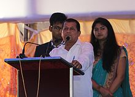

Samanta was born to Shri Anadi Charan Samanta and Smt. Nilima Rani Samanta in
the village of Kalarabanka in Cuttack District of Odisha in 1965. His father
died when Samanta was four, and he grew up in abject poverty with his widowed
mother and seven siblings.
Samanta received an M.Sc in Chemistry from Utkal University. He had a
decade-long experience in teaching in colleges, mostly at Maharshi College under
Utkal University, in Bhubaneswar as a chemistry lab assistant
Achyuta Samanta is the founder, ex chancellor, and secretary of KiiT University;
and the founder of Kalinga Institute of Social Sciences (KISS), KIIT
International School, Kalinga Institute of Medical Sciences (KIMS), KIIT School
of Management (KSOM), KIIT School of Rural Management (KSRM), KIIT School of
Computer Application (KSCA), KIIT School of Biotechnology (KSBT), KIIT Law
School (KLS), KIIT School of Languages (KSOL), Kalinga Institute of Dental
Sciences (KIDS) and Kalinga Polytechnic.
Member of national and International bodies:
He is a member of University Grants Commission (UGC), Executive Committee Member
of All India Council for Technical Education (AICTE), Academic Council Member of
Central University of Orissa, Serving Member of National Council for Teacher
Education (NCTE), Coir Board of India, National Executive Council Member of
Indian Society for Technical Education, and Executive Committee Member of Indian
Science Congress Association (ISCA)
He was also a serving member of international bodies including the International
Association of University Presidents (IAUP), United States of America; Institute
of International Education (IIE), New York City; Association of University of
Asia Pacific (AUAP); University Mobility in Asia and the Pacific (UMAP),
Bangkok, Thailand; Asia-Pacific Journal of Public Health (APACPH); United
Nations Academic Impact (UNAI), and Asia Economic Forum (AEF), CIFEJ (Centre
International Du Films Pour L'enfance Et La Jeunesse, Dubai).
Rashtriya Sanskrit Vidyapeetha – Central University, Tirupati, India − 2011
Hanseo University, South Korea, 2010
National University, Cambodia – 2009
OIU, Colombo – 2002 and 2005 (D.Sc)
National Formosa University, Taiwan – 2012
Daffodil International university, Bangladesh – 2014
International University of Kyrgyzstan − 2014
The International School of Medicine, Bishkek, Kyrgyzstan – 2014
Kainar University, Almaty, Kazakhstan − 2014
Chosun University, South Korea – 2014
Hangai University, Mongolia – 2014
Soyol Erdem University, Mongolia – 2014
Naryn State University, Kyrgyzstan – 2014
Jalalabad State University, Kyrgyzstan – 2014
Jalal-Abat State University, Kyrgyzstan – 2014
Osh State University, Kyrgyzstan – 2014
Modern University of Humanities, Moscow – 2014
Talas State University, Kyrgyzstan – 2015
Issyk- kul State University, Kyrgyzstan – 2015
Issyk- kul Co-operative Institute, Korakoll – 2015
Tajikistan State National University, Dushanbe – 2015
Daejeon Institute of Health Science, Daejeon, Korea – 2015
Kyrgyz-Uzbek University – 2015